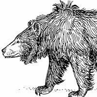

Virtual Pet
Spend some time with your virtual pet, Sana the Sloth Bear. Feed her, play with her, and take her outside. Beware of what will happen if you neglect her.
Skills Used: Java and TDD
I design a wide range of communication products including print publications as well as online and mobile experiences. I have recently begun diving into the world of software development. This is my focus here, and some of my work is below.
Spend some time with your virtual pet, Sana the Sloth Bear. Feed her, play with her, and take her outside. Beware of what will happen if you neglect her.
Skills Used: Java and TDD
Answer the fortune-teller's few short questions to see what your future holds.
Skills Used: Java
Welcome to Big Al's Pet Shelter and Delicatessen where people come for the sandwiches and take home a pet. It's your job to to keep everyone happy and healthy--pets and humans alike.
Skills Used: Java and TDD
Hi. My name is Hethur Aluma. I am a visual designer in Columbus, OH. What I love about my day-to-day is that I get to solve visual problems and organize information. Recently I decided to expand my skill set into software development. I look forward to crafting well-finctioning, user-friendly applications with people who are trying to make the world a more liveable place.
Today's a great day to collaborate. If you want to collaborate on building an amazing online experience, you are welcome to contact me. Insert form for next iteration.